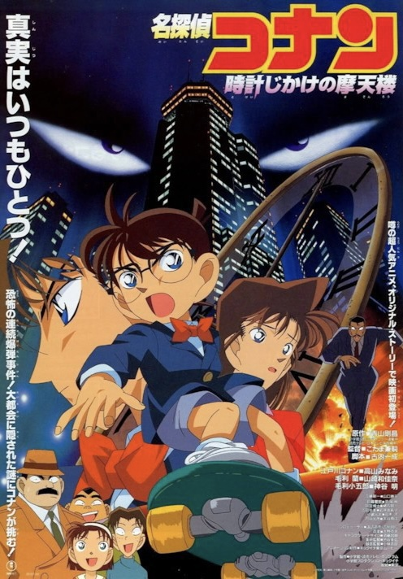

코난극장판1기 : 시한장치의 마천루
개봉 : 1997년
줄거리 : 어느 날 건축학과를 나온 정형균 교수라는 사람에게 의뢰를 받은 남도일은 몸이 작아졌기 때문에 코난은 대리인으로 유명한을 데리고 의뢰를 받는다. 그 다음날, 시내 화약 창고에서 대량의 폭약을 도둑맞은 사건이 발생하고 그 후로부터 차례차례 그 건축가가 지은 건축물이 방화로 붕괴되는 사건이 발생한다. 범인은 목소리를 변성하여 남도일에게 폭발물이 설치되었다는 말을 전화로 전한다. 그 후 코난은 폭발을 막으려고 공원으로 뛰쳐나오는데...
줄거리 : 어느 날 건축학과를 나온 정형균 교수라는 사람에게 의뢰를 받은 남도일은 몸이 작아졌기 때문에 코난은 대리인으로 유명한을 데리고 의뢰를 받는다. 그 다음날, 시내 화약 창고에서 대량의 폭약을 도둑맞은 사건이 발생하고 그 후로부터 차례차례 그 건축가가 지은 건축물이 방화로 붕괴되는 사건이 발생한다. 범인은 목소리를 변성하여 남도일에게 폭발물이 설치되었다는 말을 전화로 전한다. 그 후 코난은 폭발을 막으려고 공원으로 뛰쳐나오는데...